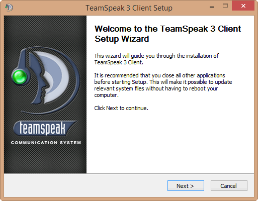
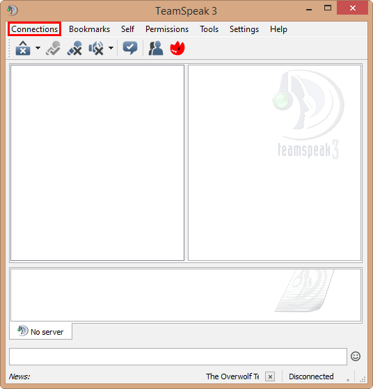
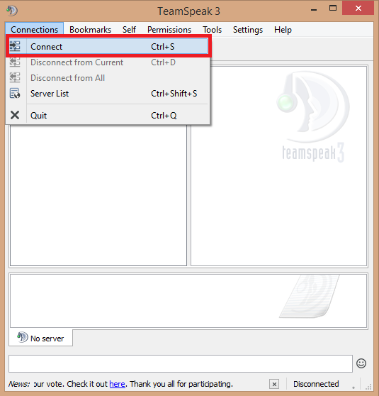

-

TeamSpeak
Назад
Скачайте и установите программу

После запуска программы вы увидите это окно, кликните по вкладке "Connections"

Далее нажмите "Connect"

Введите ip адрес сервера(192.168.1.1) и своё имя, после чего нажмите "Connect"